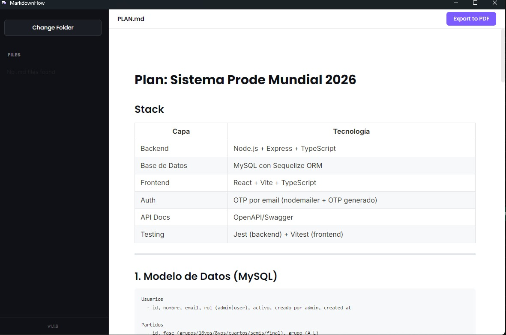

Escribe en Markdown.
Fluye hacia PDF.
Un visualizador minimalista y libre de distracciones que convierte tu Markdown en documentos PDF perfectamente formateados en un solo clic.

Diseñado para la velocidad y la precisión
Vista Previa Instantánea
Siente el flujo mientras escribes. Nuestra tecnología de renderizado de ultra-baja latencia actualiza cada carácter al instante.
Exportación PDF Perfecta
Sin sorpresas. El PDF final se ve exactamente igual que tu vista previa, respetando cada margen y estilo tipográfico.
Soporte Math (KaTeX)
Escritura científica de alto nivel. Renderiza complejas fórmulas matemáticas y símbolos con la precisión que tus documentos técnicos requieren.
Libre de Distracciones
Interfaz "Zen" optimizada para el enfoque. Elimina el ruido visual y concéntrate exclusivamente en la creación de contenido.
¿Listo para mejorar tus documentos técnicos?
Únete a cientos de desarrolladores y redactores que ya han simplificado su flujo de trabajo con MarkdownFlow.
Obtén MarkdownFlow Gratis